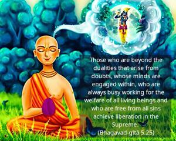
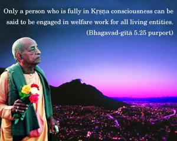
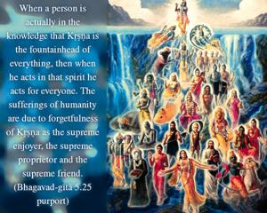
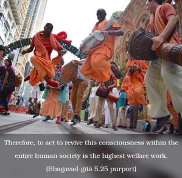
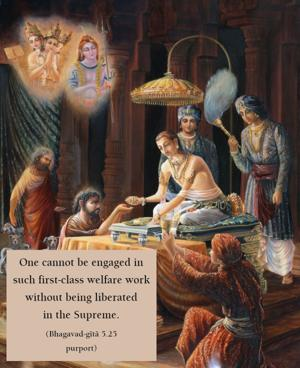

Those who are beyond the dualities that arise from doubts, whose minds are engaged within, who are always busy working for the welfare of all living beings and who are free from all sins achieve liberation in the Supreme.





Only a person who is fully in Kṛṣṇa consciousness can be said to be engaged in welfare work for all living entities. When a person is actually in the knowledge that Kṛṣṇa is the fountainhead of everything, then when he acts in that spirit he acts for everyone. The sufferings of humanity are due to forgetfulness of Kṛṣṇa as the supreme enjoyer, the supreme proprietor and the supreme friend. Therefore, to act to revive this consciousness within the entire human society is the highest welfare work. One cannot be engaged in such first-class welfare work without being liberated in the Supreme. A Kṛṣṇa conscious person has no doubt about the supremacy of Kṛṣṇa. He has no doubt because he is completely freed from all sins. This is the state of divine love.
A person engaged only in ministering to the physical welfare of human society cannot factually help anyone. Temporary relief of the external body and the mind is not satisfactory. The real cause of one’s difficulties in the hard struggle for life may be found in one’s forgetfulness of his relationship with the Supreme Lord. When a man is fully conscious of his relationship with Kṛṣṇa, he is actually a liberated soul, although he may be in the material tabernacle.